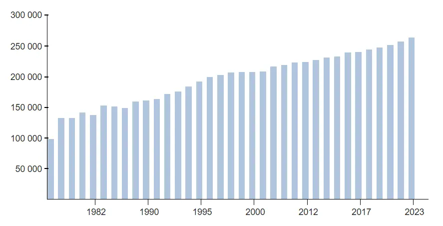
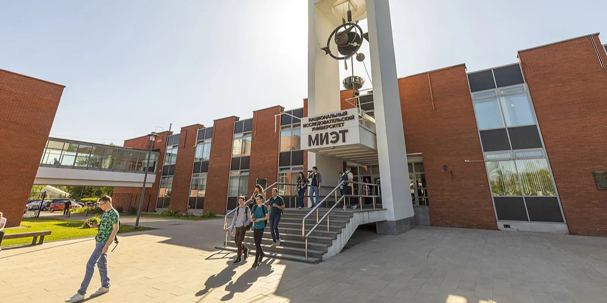
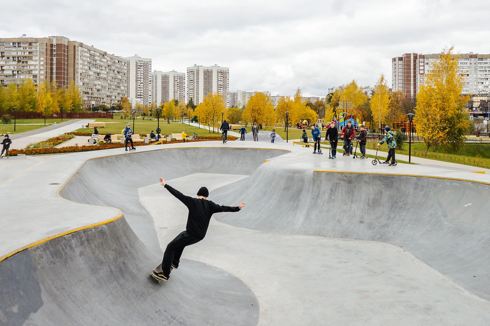
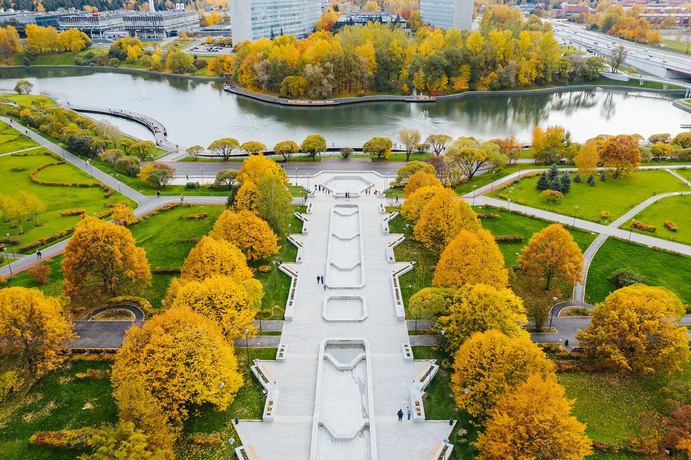
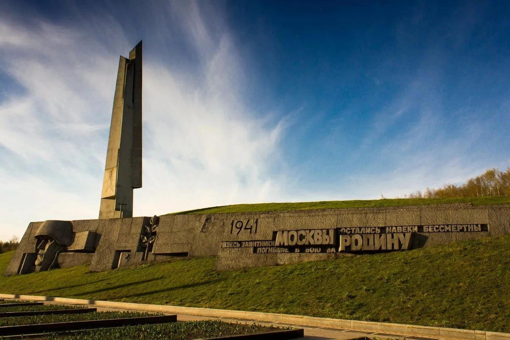
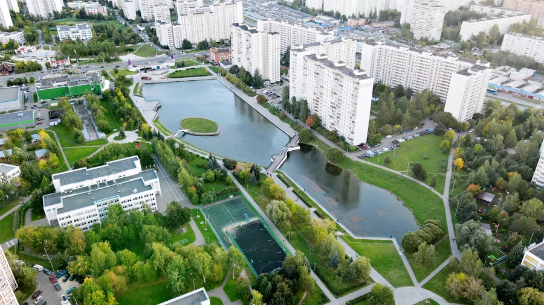
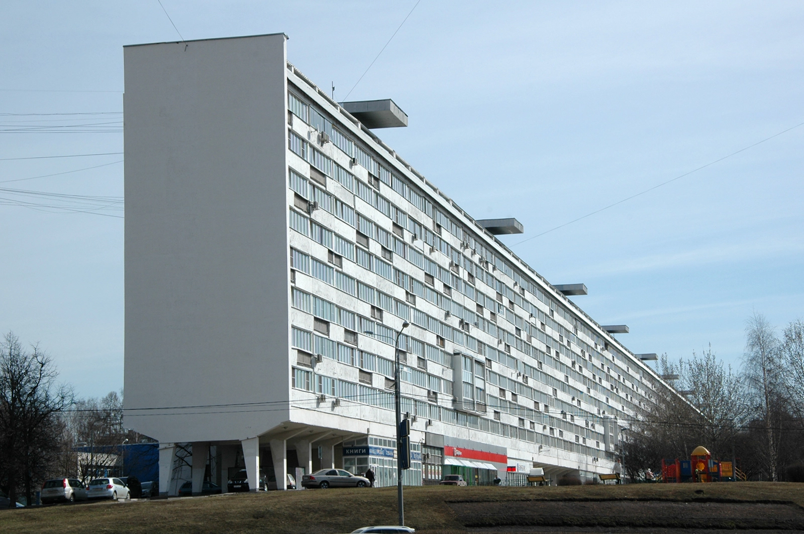

Zelenograd was founded in 1958 as a new town in the Soviet Union, and developed as a center of electronics,
microelectronics and the computer industry known as the "Soviet/Russian Silicon Valley".
It remains an important center of electronics in Russia.
The city color is green and its emblematic animal is the squirrel.
Demographics

According to statistics for 2023, Zelenograd has a population of 262,505.
Districts
Matushkino: 1st, 2nd, and 4th microdistricts, North Industrial Zone
Savyolki: 3rd, 5th, 6th and 7th microdistricts, East Utility Zone, Nazar'evo village
Staroye Kryukovo: 8th and 9th microdistricts, South Industrial Zone, north part of Malino settlement
Silino: 10th, 11th, and 12th microdistricts, West and Alabushevo Industrial Zones
Kryukovo: 14th-23rd microdistricts, Andreevka Utility Zone, Malino Industrial Zone, south part of Malino settlement, Kamenka, Kutuzovo, Novo-Malino, and Rozhki villages
Discover Zelenograd

National Research University of Electronic Technology (MIET)

A new professional-level skate park has become a focal point of attraction

Cascade of fountains in the Park of Victory

The Shtyki (Bayonets) - memorial complex erected in honor of the fallen soldiers who defended Moscow in 1941

Mikhailovsky Pond

Flute House - the longest building in Zelenograd